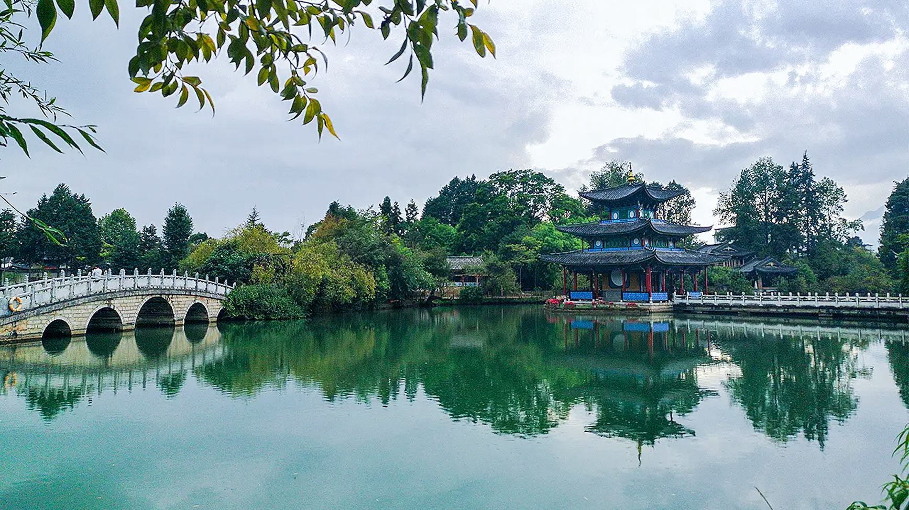
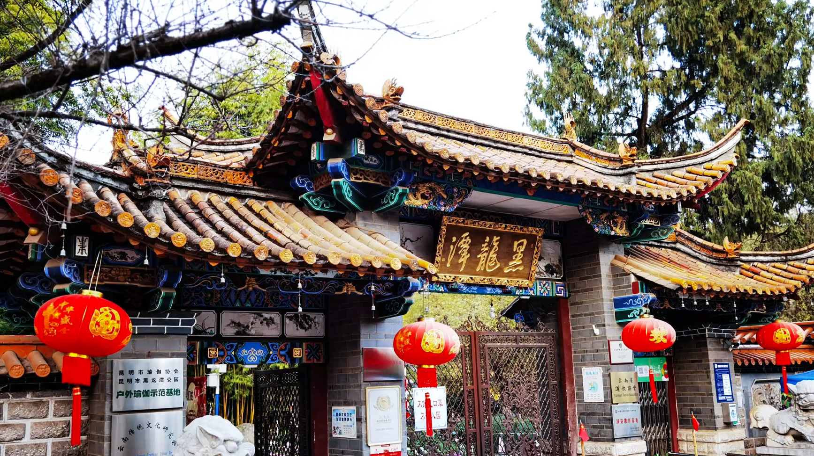
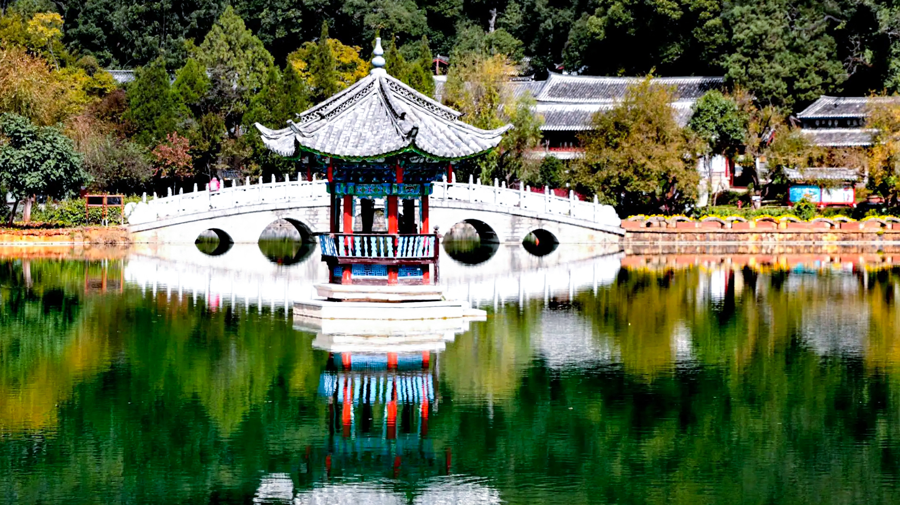

云南大学
黑龙潭公园是位于昆明市北郊的一个古老的风景名胜区，其历史悠久，以唐梅、宋柏、元杉、明茶为代表的名木古树群落而闻名，是昆明著名的赏梅地。
昆明黑龙潭公园主要由古建筑群和“龙泉探梅”两大景区组成。"龙泉探梅"为"昆明新十六景"之一，是春城昆明的一张花事名片。自唐代"道安植梅"始，黑龙潭公园已经建成了全国面积最大、树龄最老、品种最优的梅园，现梅园的规模已达到520亩，地栽梅花20000余株，收集保存梅花盆景近4000余盆，成为西南地区独具特色的山水梅园，是全国十大梅园之一。
冬日里，百亩梅园万株梅，竞相绽放独暄妍，一树一树的梅花或红、或粉、或白，占尽风情，满园暗香浮动，沁人心脾。此时，昆明最重要的花事便是"龙泉探梅"了，人们纷纷至黑龙潭赏梅花、闻梅香、寻梅韵，领略中华传统的梅文化。
云南大学地球科学学院@2021~2022